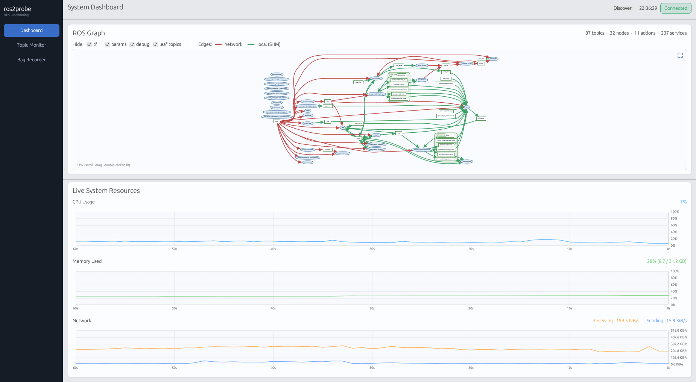
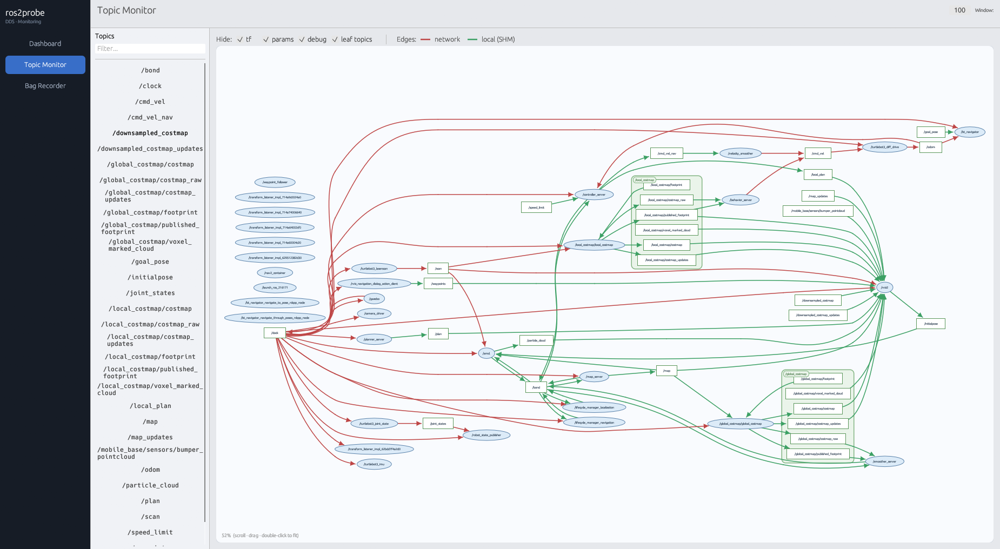
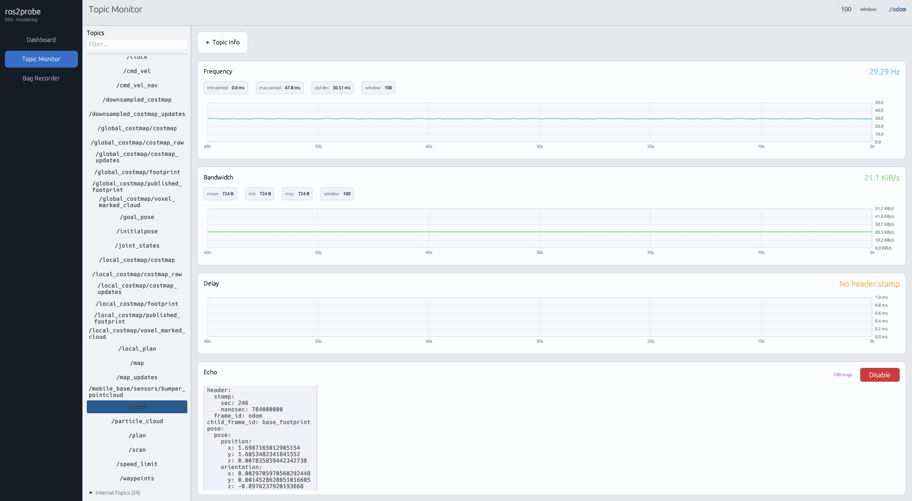
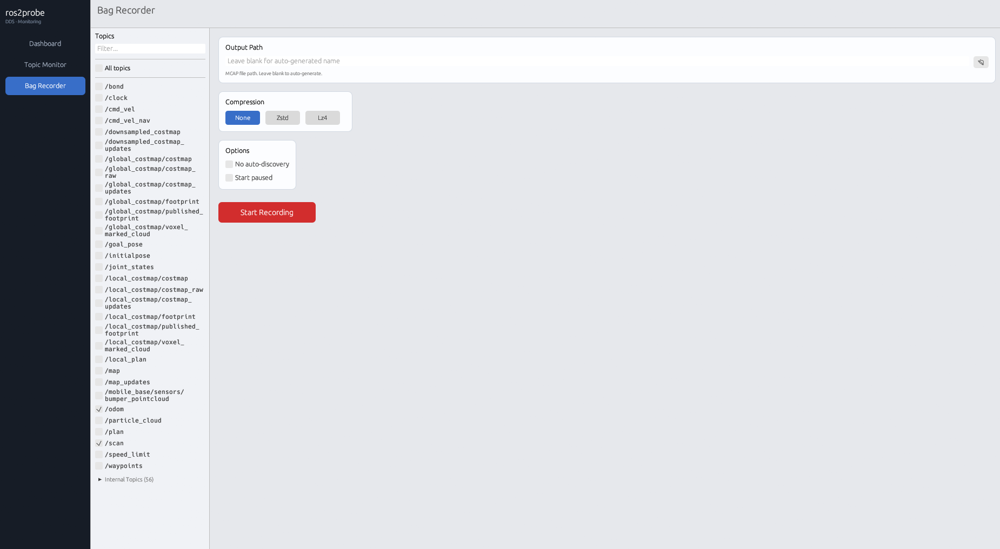
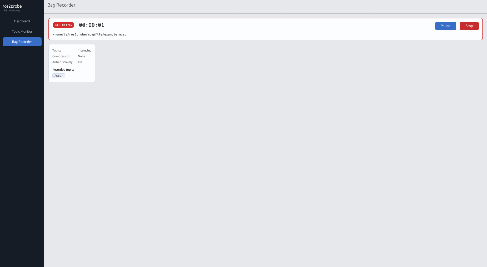
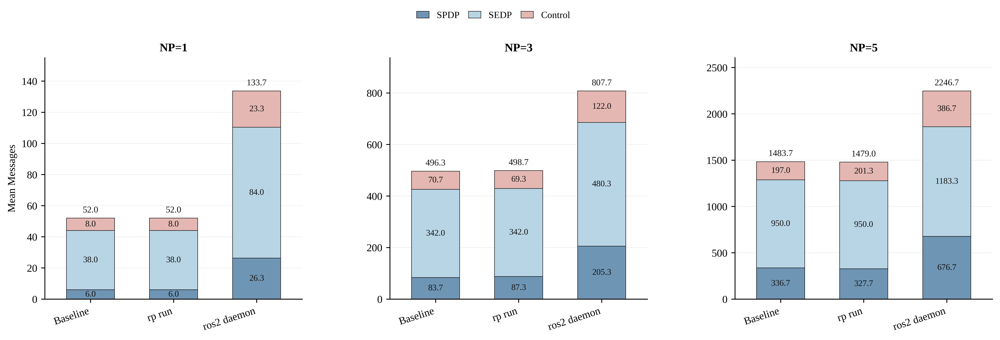
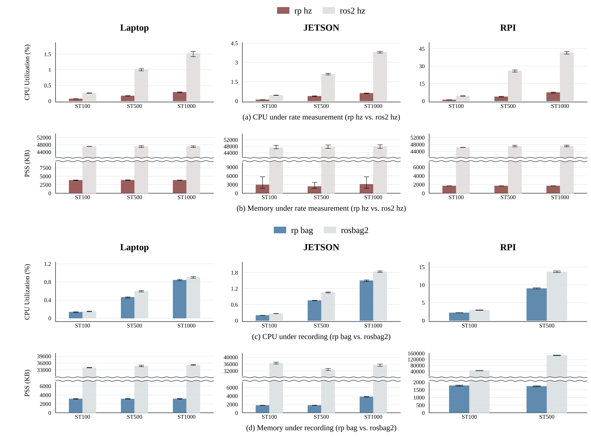
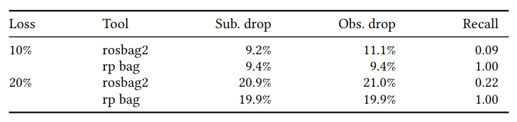
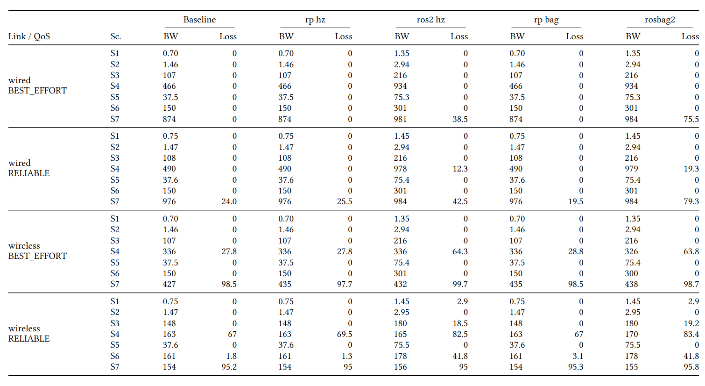

ros2probe is a middleware-level observability layer for ROS 2. It taps wire traffic from the kernel network path, never creates a middleware participant, and reconstructs the full ROS graph, topic metrics, and message streams entirely in userspace. DDS is supported today. Zenoh is planned.
Existing graph, CLI, and recording tools all join the middleware graph. They perturb the very properties engineers are trying to measure.
Runs as a middleware participant to cache the graph, continuously participating in discovery. Contributes to O(N²) discovery traffic and exhibits graph-state inconsistency when nodes crash or networks partition.
Creates a new subscriber just to observe. Triggers QoS negotiation, injects receive-side load, and appears in ros2 topic list. The act of measurement deforms the system.
Registers as a full middleware participant with subscribers for every recorded topic. Observation and storage cannot be separated. Under constrained links the recorder itself starves the control plane.
ros2probe sits outside the middleware runtime. It reads wire frames at the kernel network path, filters them on a session-driven endpoint whitelist, and falls back gracefully when IP fragmentation or shared-memory transports get in the way. Today we parse the RTPS wire format for DDS; the same architecture will absorb the Zenoh wire format as a parser plug-in.
Passive Observer architecture. No middleware participant is created at steady state. Logical topology integrity is preserved. Discovery, QoS negotiation, and data-plane load are untouched.
Session-level topic interest compiles into a kernel filter. In fragmentation-avoided deployments: perfect per-packet selectivity. Otherwise: a fragment-aware fallback that preserves correctness without assuming any specific middleware configuration.
Data-centric, event-driven GID synchronisation: each SEDP announcement immediately updates the kernel whitelist. RTPS protocol ordering guarantees the GID is registered before any DATA can arrive, eliminating races without a time-based window.
The main observer stays zero-participant. When the user explicitly observes a shared-memory topic, ros2probe spawns a short-lived, namespace-isolated subprocess that joins the DDS domain only inside its mount namespace. The runtime itself never becomes a middleware participant.
Just download and run.
curl -fsSL https://github.com/csi-dgist/ros2probe/releases/latest/download/install.sh | sh
curl -fsSL https://github.com/csi-dgist/ros2probe/releases/latest/download/install.sh | sh -s -- --gui
sudo rm /usr/local/bin/rp
| Requirement | Notes |
|---|---|
| Linux 5.15+ | eBPF socket filter, AF_PACKET TPACKET_V3 |
| ROS 2 Humble+ | Iron, Jazzy, Rolling also supported |
| Python 3 + rclpy | Only for rp topic echo |
| Optional | Jumbo frames, DDS XML profile that avoids IP fragmentation |
| Command | Description |
|---|---|
| rp run | Start the ros2probe runtime daemon |
| rp gui | Launch the GUI |
| rp topic | Topic introspection — list, hz, bw, delay, echo |
| rp node | Node introspection commands |
| rp service | Service introspection commands |
| rp action | Action introspection commands |
| rp bag | Bag recording commands — record an MCAP bag (zstd / lz4 / none) |
| rp discover | Force a /ros_discovery_info broadcast over UDP (SHM-aware shadow mode) |
Switch between tabs for the layered architecture, the feature surface, live demos, and the paper.
Every other ROS 2 observability tool attaches somewhere inside the application stack: rclcpp, rcl, rmw, or the middleware itself. ros2probe is the only layer that sits below the middleware, in the kernel network path.
ros2_tracing adds tracepoints in rclcpp / rcl. CARET wraps rmw with LD_PRELOAD. rosbag2, ros2 topic echo, ddsrecorder, and FastDDS Statistics all create endpoints in the middleware itself. Each becomes part of the stack being observed.
A kernel-space eBPF socket filter sees wire frames as they leave or enter the NIC. Userspace reassembles, decodes, and reconstructs the graph. The middleware never sees ros2probe.
Kernel timestamps arrive with each frame. Loopback is included by default so intra-host UDP traffic is captured too.
Vendor-neutral across DDS implementations. OMG RTPS is the only ABI. The Zenoh wire format will plug in at the same layer.
ros_discovery_info binds endpoint GUIDs to ROS node namespaces. TTL sweep keeps state fresh when nodes disappear.
A single Unix socket command bus multiplexes all consumers. Sessions open and close, the kernel filter follows automatically.
ros2probe never joins the middleware graph. Your ros2 topic list stays clean.
Participants, endpoints, node names, pub/sub relationships, all derived from wire discovery and ros_discovery_info.
SHM-only topics are identified and made observable on demand via namespace-isolated shadow subscribers.
Publish rate (hz), bandwidth (bw), end-to-end delay, and decoded echo, all with sliding-window statistics.
Bag files with optional zstd / lz4 compression, pause / resume, and per-topic selection.
Same data, two interfaces. rp for shells and scripts, rp gui for visual exploration.
tf, parameter_events, rosout, debug, and SHM-only topics are automatically classified and separated in every UI.
Each SEDP event immediately updates the kernel GID whitelist. RTPS protocol ordering ensures the GID is registered before DATA arrives, with no time-based window needed.
Wire-level observation only. No vendor-specific symbols, no middleware version coupling, no BTF/CO-RE fragility.
# auto-escalates to root if needed (CAP_NET_ADMIN + CAP_NET_RAW) rp run
Run rp run first, then launch your ROS 2 nodes. The runtime needs to be observing before the participants announce themselves so it can capture their discovery traffic. If you started rp run after some nodes were already up, run rp discover to force a /ros_discovery_info re-broadcast and pick up the existing graph.
rp topic list rp topic info /chatter rp topic hz /chatter rp topic bw /scan rp topic delay /imu rp topic echo /chatter --field data
rp bag record /chatter /scan -o session.mcap --compression-format zstd
rp gui
Scripts talk to rp over a Unix socket. Humans get a GUI with a dashboard, a topic monitor, and a bag recorder.

rp gui → Dashboard

rp gui → Topic Monitor 1

rp gui → Topic Monitor 2

rp gui → Bag Recorder 1

rp gui → Bag Recorder 2
Not all of these tools are built for the same thing. ros2_tracing and CARET are performance-analysis tools for callback chains and executors. rosbag2 and ddsrecorder are loggers. ros2 daemon is a CLI cache. Wireshark is a general-purpose packet tool, passive but ROS 2-unaware, so it cannot reconstruct the topic graph and its cost grows with total traffic, not with what you observe. ros2probe aims at live middleware-level observation. The table below makes this explicit in the first row.
| ros2 daemon | ros2 topic | rosbag2 | ros2_tracing | CARET | Wireshark | ros2probe | |
|---|---|---|---|---|---|---|---|
| Purpose | CLI graph cache | Live topic CLI | Message logging | Callback / executor tracing | E2E callback-chain latency | Packet-level RTPS inspection | Live middleware-level observation |
| Graph observation | △ | ✗ | ✗ | ✗ | △ | ✗ | ● |
| Message recording | ✗ | ✗ | ● | ✗ | ✗ | △ | ● |
| Callback / executor trace | ✗ | ✗ | ✗ | ● | ● | ✗ | ✗ |
| Non-intrusive | ✗ | ✗ | ✗ | △ | △ | ● | ● |
| Process restart not required | ● | ● | ● | ● | ✗ | ● | ● |
| Middleware-neutral | ✗ | ✗ | △ | △ | ✗ | ● | ● |
| Steady-state overhead | high | none (off) | none (off) | low | high | scales w/ traffic | minimal |
| Observer Effect on graph | yes | yes | yes | limited | limited | none | none |
● full support · △ partial / conditional · ✗ not supported
ros2_tracing and CARET solve a different problem (internal performance analysis) and are complementary to ros2probe, not competitors.
Abstract
Robot Operating System 2 (ROS 2), the de facto standard middleware framework for robots, runs each robot as a graph of nodes communicating over the Data Distribution Service (DDS), a publish/subscribe substrate. Observing this inter-node communication in real time is essential to robot development, yet observing it has a price. A tool can receive data only by joining the DDS domain as a subscriber that discovery has matched to the publisher, so the act of observing folds the tool into the system it measures and perturbs it.
We define this protocol-inherent perturbation as the observer's probe effect. It inflates the discovery plane, adds deserialization cost on the observer, makes the loss it reports diverge from what the subscriber actually received, and near saturation displaces the subscriber's own messages. The only existing escape, capturing all wire traffic passively, discards the ROS 2 message semantics and scales with total traffic, not with what is observed.
We present ros2probe, a non-intrusive observation framework that removes the probe effect. It reconstructs the full ROS 2 communication state from the domain's discovery packets at no bandwidth cost, then drives an in-kernel filter restricted to the topics the user asks for, lifting only those packets at minimal cost and observing the messages the real subscriber receives. Its interfaces and recordings match the standard ROS 2 tools.
Across three hardware platforms (laptop, Jetson, and Raspberry Pi), two DDS implementations, and seven robot-operation workloads, ros2probe holds the discovery graph within 0.5% of an unobserved system, whereas domain-joining tools inflate discovery up to 2.6× and drop 38.5% of the subscriber's messages at saturation while ros2probe drops none. It reports loss with a recall of 1.0, cuts observer CPU and memory by up to 7× and 28×, and stays practical on the embedded robots where existing tools overload the system.
Passive Observer architecture. No middleware participant at steady state. The monitoring tool does not become part of what it measures.
Session-level topic interest compiles to a kernel filter. Fragment-aware fallback preserves correctness regardless of middleware configuration.
Data-centric, event-driven GID synchronisation: each SEDP announcement immediately updates the kernel whitelist. RTPS protocol ordering structurally prevents discovery-vs-data races.
The main observer stays zero-participant. SHM-only topics become visible on demand: ros2probe launches a short-lived subprocess inside an isolated mount namespace, and only that subprocess joins the DDS domain. The runtime itself never registers as a middleware participant.
Four experiments on a real cross-host testbed (a publisher laptop with a laptop, an NVIDIA Jetson Orin NX, and a Raspberry Pi 4B as receivers) on Ubuntu 22.04 (Linux 5.15) and ROS 2 Humble. Quantitative results use FastDDS 2.6.11, and ros2probe runs unmodified on CycloneDDS 0.10.5 as well.
SPDP / SEDP / Control discovery messages with every participant both publisher and subscriber, sweeping the participant count NP ∈ {1, 3, 5}, averaged over 10 runs. ros2probe creates no DDS participant, so it should leave the discovery graph untouched.

Discovery messages under each condition (NP = 1, 3, 5). rp run matches the baseline at every scale, while the ros2 daemon inflates the total by 2.6×, 1.6×, and 1.5× across SPDP, SEDP, and Control.
Observer-process CPU and PSS memory under a fixed 64 KiB payload published at 100, 500, and 1000 Hz, on three receivers (laptop, Jetson, and Raspberry Pi 4B) for both rate measurement and recording.

Observer CPU and memory under rate measurement (a, b) and recording (c, d). rp hz parses only RTPS headers, cutting observer memory by up to 28× (1.7–3.9 MB versus ~46 MB for ros2 hz) and CPU by up to 7×. The gap turns from efficiency into feasibility on the embedded platforms.
Recording a topic under 10% and 20% injected packet loss (tc netem, BEST_EFFORT QoS), matching each tool's recorded set against the messages the subscriber actually received, by sequence number.

Recall of reported losses against the subscriber's actual losses. Both tools report a similar aggregate drop rate, but rp bag reads the same wire frames as the subscriber and reaches recall 1.00, whereas rosbag2's independent unicast stream catches only 0.09 (10%) and 0.22 (20%).
Received bandwidth and the original subscriber's drop rate over seven workloads (S1–S7, sensor message to near-GbE composite), swept across the full 2×2 matrix of {BEST_EFFORT, RELIABLE} QoS × {wired, wireless} link.
| Scenario | Topic | Payload | Rate | Est. bandwidth |
|---|---|---|---|---|
| S1 | /imu | 320 B | 200 Hz | ~0.72 Mbps |
| S2 | /scan | 4.3 KB | 40 Hz | ~1.4 Mbps |
| S3 | /points | 644 KB | 20 Hz | ~103 Mbps |
| S4 | /points | 2.72 MB | 20 Hz | ~435 Mbps |
| S5 | /image_raw/compressed | 150 KB | 30 Hz | ~36 Mbps |
| S6 | /depth/image_raw | 600 KB | 30 Hz | ~147 Mbps |
| S7 | composite (see breakdown below) | — | — | ~830 Mbps |
Workloads (S1–S7). Seven scenarios sweeping the offered bandwidth from a small IMU message (S1) up to a near-GbE autonomous-driving composite (S7).
| S7 component topic | Payload | Rate | Est. bandwidth |
|---|---|---|---|
| /cmd_vel | 72 B | 20 Hz | ~0.03 Mbps |
| /imu | 320 B | 200 Hz | ~0.72 Mbps |
| /points/front | 2.72 MB | 20 Hz | ~435 Mbps |
| /points/rear | 644 KB | 20 Hz | ~103 Mbps |
| /camera/front/compressed | 150 KB | 30 Hz | ~36 Mbps |
| /camera/left/compressed | 150 KB | 30 Hz | ~36 Mbps |
| /camera/right/compressed | 150 KB | 30 Hz | ~36 Mbps |
| /camera/rear/compressed | 150 KB | 30 Hz | ~36 Mbps |
| /depth/image_raw | 600 KB | 30 Hz | ~147 Mbps |
| Total | ~830 Mbps |
S7 composite breakdown. A multi-sensor mix of teleoperation, IMU, two LiDARs, four cameras, and a depth stream, totaling ~830 Mbps.

Received bandwidth (BW, Mbps) and subscriber drop rate (Loss, %) across the 2×2 link × QoS matrix. rp hz / rp bag match the baseline in every cell, while the DDS tools roughly double the bandwidth and drive loss to 38.5% (ros2 hz) and 75.5% (rosbag2) at the saturating wired S7.
Read the preprint on arXiv, and use the BibTeX entry below.
@misc{yu2026ros2probe,
title = {ros2probe: Non-intrusive, Kernel-selective Observability for Robot Operating System 2 Middleware},
author = {Jisang Yu and Sanghoon Lee and Yeonwoo Choi and Kyung-Joon Park},
year = {2026},
eprint = {2606.10746},
archivePrefix = {arXiv},
primaryClass = {cs.RO},
url = {https://arxiv.org/abs/2606.10746}
}